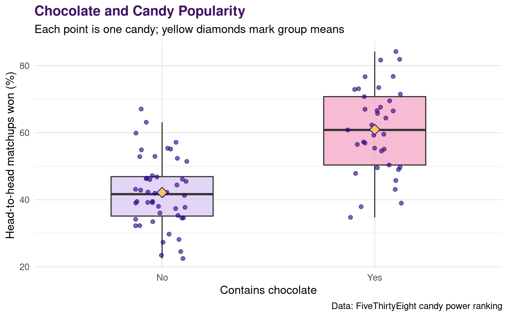
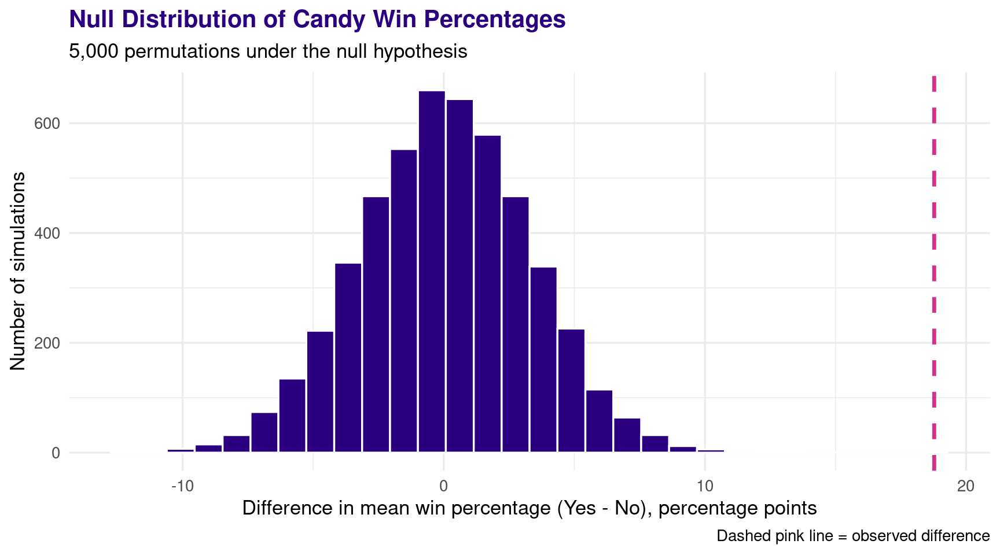

I have always thought that the best candies contain chocolate and peanuts, but in this analysis I am focusing on chocolate alone. I am using FiveThirtyEight’s dataset of 85 candies, which records their ingredients and their win percentages in head-to-head online candy matchups. I want to know whether candies containing chocolate have a higher average win percentage than candies without chocolate. To investigate this question, I will compare the original group means and run a permutation test that simulates the null hypothesis of no relationship between chocolate content and win percentage.
Research question: Do chocolate candies have a higher average win percentage than non-chocolate candies?
Null hypothesis: Chocolate content and win percentage are unrelated.
Alternative hypothesis: Chocolate candies have a higher average win percentage.
Test statistic: Mean win percentage for chocolate candies minus mean win percentage for non-chocolate candies (in percentage points).
# A tibble: 6 × 3
competitorname chocolate winpercent
<chr> <chr> <dbl>
1 100 Grand Yes 67.0
2 3 Musketeers Yes 67.6
3 One dime No 32.3
4 One quarter No 46.1
5 Air Heads No 52.3
6 Almond Joy Yes 50.3
Each row represents one candy. The chocolate variable tells us whether the candy contains chocolate, and winpercent is the percentage of head-to-head matchups in which the candy was chosen.
First, I visualize the original data with a boxplot. The individual points represent candies, and the yellow diamonds show the means that I will compare in my permutation test.
Show R code
candy |>ggplot(aes(x = chocolate, y = winpercent, fill = chocolate)) +geom_boxplot(width =0.48,alpha =0.75,outlier.shape =NA ) +geom_jitter(width =0.13,alpha =0.6,color ="#2A0081" ) +stat_summary(fun = mean,geom ="point",shape =23,size =4,fill ="#F9C45C",color ="#2A0081" ) +scale_fill_manual(values =c("No"="#D8C7F2", "Yes"="#F4A6C6"),guide ="none" ) +labs(title ="Chocolate and Candy Popularity",subtitle ="Each point is one candy; yellow diamonds mark group means",x ="Contains chocolate",y ="Head-to-head matchups won (%)",caption ="Data: FiveThirtyEight candy power ranking" ) +theme_minimal(base_size =13) +theme(plot.title =element_text(face ="bold",color ="#401465" ) )

To measure the observed gap, I calculate the mean win percentage of each group and subtract the non-chocolate mean from the chocolate mean.
Chocolate candies have a mean win percentage of 60.9%, compared with 42.1% for non-chocolate candies.
The difference is 18.8 percentage points in favor of chocolate candies.
Simulating the null hypothesis
Under the null hypothesis, chocolate content should not be associated with win percentage.
I wrote shuffle_test() to shuffle the existing win percentages without replacement while leaving the Yes/No chocolate labels in place. The function then recalculates the mean for each group and returns the difference between them. This produces one simulated difference under the null hypothesis.
I use map_dbl() to run that function 5,000 times. Each call returns one number, so map_dbl() is useful because it puts the results into a numeric vector. tibble() then stores them in a data frame that I can plot.
The histogram shows all 5,000 simulated differences in means. If the null hypothesis is true, I would expect the simulated differences to cluster around zero.
The dashed pink line shows the observed difference from the original candy data, so we can see whether it is unusually large relative to the null distribution.
Show R code
simulations |>ggplot(aes(x = diff)) +geom_histogram(bins =30,fill ="#2A0081",color ="white" ) +geom_vline(xintercept = observed_diff,color ="#D62F8B",linetype ="dashed",linewidth =1.2 ) +labs(title ="Null Distribution of Candy Win Percentages",subtitle ="5,000 permutations under the null hypothesis",x ="Difference in mean win percentage (Yes - No), percentage points",y ="Number of simulations",caption ="Dashed pink line = observed difference" ) +theme_minimal(base_size =13) +theme(plot.title =element_text(face ="bold",color ="#2A0081" ) )

Because my alternative hypothesis predicts a higher win percentage for chocolate candies, I use a right-tailed p-value. This is the proportion of simulations whose difference is greater than or equal to the observed difference.
0 out of 5,000 simulated differences were at least as large as the observed difference of 18.8 percentage points.
The simulated right-tail proportion was 0.
Because no simulations were as extreme, I report p < 0.0002 to reflect the simulation’s resolution; this does not mean the true p-value is exactly zero.
Conclusion
The original data show that chocolate candies have a higher mean win percentage than candies without chocolate, with an observed difference of 18.8 percentage points.
I wrote a function that shuffles win percentages and used map_dbl() to repeat it 5,000 times, creating a null distribution for the difference in means.
None of those simulations produced a difference as large as the observed one, providing strong evidence of an association between chocolate content and win percentage in this dataset.
Because the candies and the online participants were not randomly sampled from all candies and consumers, I cannot generalize this result to everyone or claim that chocolate causes a candy to be more popular.
The original data come from Walt Hickey’s The Ultimate Halloween Candy Power Ranking for FiveThirtyEight, based on online head-to-head candy preference matchups.